คู่มือใช้งานเครื่องมือ · ระดับ Free
ฐานข้อมูลเชื้อเพลิงแข็ง
Solid Fuel Database
FREE
สำหรับช่างเทคนิคที่เพิ่งเริ่มงาน — อ่านแล้วทำตามได้เอง
ใช้เวลาฝึกประมาณ 30 นาที
เคสตัวอย่าง: โรงงาน A หาค่าอ้างอิงของแกลบ ฟางข้าว และไม้สับ
อ.หนึ่ง กลับทวี / Aj. Nueng Klubtavee
tripleeenergytools.com
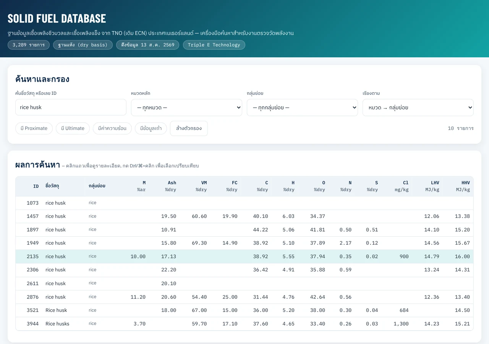
หน้าจอเครื่องมือ — เปิดได้จากเมนู Free ของเว็บไซต์
รุ่นเครื่องมือ: Free commit 09751e3 · จับภาพ 25 พ.ย. 2569 · คู่มือ Rev01
เครื่องมือนี้ตอบคำถามอะไร
คู่มือใช้งาน · ฐานข้อมูลเชื้อเพลิงแข็ง (Solid Fuel Database) · ระดับ Free
2 / 26
| คำถามหน้างาน | ใช้การ์ดไหน | เคสโรงงาน A ได้ |
|---|---|---|
| แกลบมีค่าความร้อนเท่าไร (ค่าอ้างอิง) | ① ค้นหา → ② คลิกแถว → ③ | #2135: HHV 16.00 · LHV 14.79 MJ/kg (ฐานแห้ง) |
| เมื่อเชื้อเพลิงมีความชื้น ใช้งานได้จริงเท่าไร | ③ รายละเอียด (LHV ar) | 13.07 MJ/kg ที่ความชื้น 10.00 % |
| แกลบจากหลายแหล่ง ต่างกันแค่ไหน | ⑤ สถิติของกลุ่ม | HHV 13.38–16.00 MJ/kg (n = 8) |
| เชื้อเพลิงไหนเสี่ยงเถ้าเกาะ ตะกรัน | ③ รายละเอียด (ดัชนีความเสี่ยง) | ฟางข้าว #444: Alkali Index 1.664 kg/GJ |
| ดูเชื้อเพลิงหลายตัวในตารางเดียว | ④ เปรียบเทียบ | 3 ตัว: #2135 · #444 · #2829 |
| สูตรแปลงฐานและเกณฑ์ดัชนี | ⑥ สูตรและสมมุติฐาน | daf · ar · B/A · Alkali Index · Silica ratio |
💡 เคล็ดลับ
เครื่องมือนี้ไม่มีปุ่มคำนวณ — พิมพ์คำค้นแล้วตารางเปลี่ยนทันที · ฐานข้อมูลมี 3,289 รายการ
แผนที่หน้าจอ: 6 การ์ด
คู่มือใช้งาน · ฐานข้อมูลเชื้อเพลิงแข็ง (Solid Fuel Database) · ระดับ Free
3 / 26
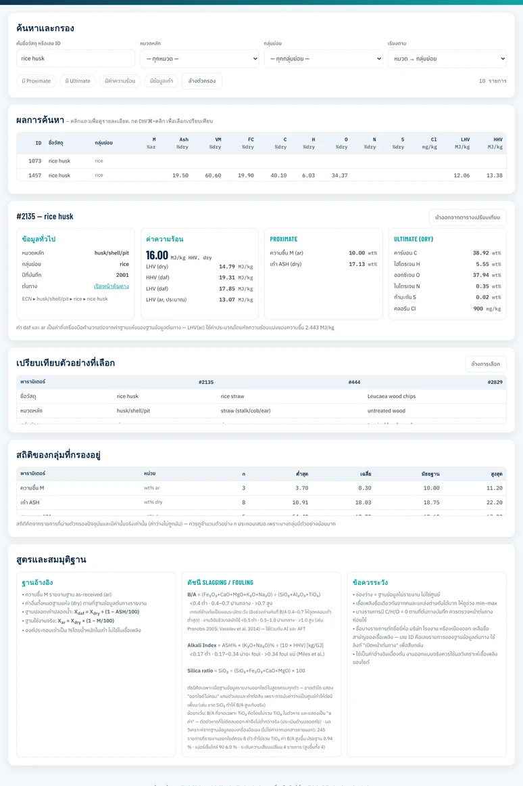
1
2
3
4
5
6
1
① ค้นหาและกรอง — เริ่มที่นี่
2
② ผลการค้นหา — คลิกแถวเพื่อเปิดรายละเอียด
3
③ รายละเอียดของรายการที่คลิก
4
④ เปรียบเทียบรายการที่เลือก
5
⑤ สถิติของกลุ่มที่กรองอยู่
6
⑥ สูตรและสมมุติฐาน
การ์ด ③ และ ④ ซ่อนอยู่ จนกว่าจะคลิกแถว หรือเลือกเปรียบเทียบ
ข้อมูลต้นทาง: ฐานข้อมูล Phyllis ของ TNO (เดิม ECN) ประเทศเนเธอร์แลนด์ — ดึงข้อมูล 13 ส.ค. 2569
💡 เคล็ดลับ
ภาพนี้ย่อความสูงของตารางเพื่อให้เห็นครบทุกการ์ด — บนจอจริงตารางยาวกว่านี้ เลื่อนดูในกรอบได้
เปิดบนมือถือ และสลับภาษา
คู่มือใช้งาน · ฐานข้อมูลเชื้อเพลิงแข็ง (Solid Fuel Database) · ระดับ Free
4 / 26
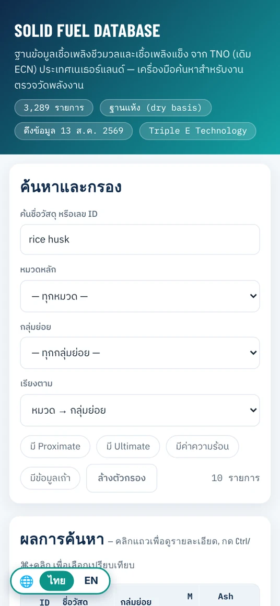
ใช้บนมือถือได้ — การ์ดเรียงเป็นคอลัมน์เดียว ตารางผลเลื่อนซ้าย-ขวาได้
มือถือกด Ctrl/⌘ ไม่ได้ — เลือกเปรียบเทียบด้วยปุ่ม เพิ่มในตารางเปรียบเทียบ ในการ์ดรายละเอียด
ปุ่ม ไทย | EN ลอยอยู่ด้านล่าง กดสลับภาษาได้ คำค้นไม่หาย
ชื่อวัสดุในฐานข้อมูลเป็นภาษาอังกฤษ ทั้งสองภาษา
⚠️ ระวัง
ค้นด้วยชื่อภาษาอังกฤษ เช่น rice husk · bagasse · wood chips — พิมพ์ "แกลบ" จะไม่พบ
คำศัพท์ 8 คำที่ต้องรู้ก่อนเริ่ม
คู่มือใช้งาน · ฐานข้อมูลเชื้อเพลิงแข็ง (Solid Fuel Database) · ระดับ Free
5 / 26
| คำ | ความหมายแบบสั้น | จำง่าย ๆ |
|---|---|---|
| ar · dry · daf | ar = สภาพที่ได้รับจริง (มีน้ำ) · dry = ฐานแห้ง · daf = แห้งและไม่รวมเถ้า | ar ต่ำสุด · daf สูงสุด |
| Proximate | ความชื้น M · เถ้า ASH · สารระเหย VM · คาร์บอนคงตัว FC | VM + FC + ASH = 100 (ฐานแห้ง) |
| Ultimate | ธาตุในเชื้อเพลิง: C · H · O · N · S และคลอรีน Cl | ใช้คิดอากาศเผาไหม้ และ CO₂ |
| HHV · LHV | HHV = ค่าความร้อนรวมไอน้ำกลั่นตัว · LHV = หักความร้อนแฝงของไอน้ำออก | LHV < HHV เสมอ |
| B/A ratio | สัดส่วนออกไซด์ด่างต่อออกไซด์กรดในเถ้า | สูง = เถ้าหลอมง่าย (ตะกรัน) |
| Alkali Index | ปริมาณ K₂O + Na₂O ต่อพลังงาน 1 GJ (kg/GJ) | สูง = เถ้าเกาะท่อ (fouling) |
| AFT: IDT · SOT · HT · FT | อุณหภูมิที่เถ้าเริ่มเสียรูป · อ่อนตัว · เป็นครึ่งทรงกลม · ไหล | IDT ต่ำ = เสี่ยง clinker |
| Cl (mg/kg) | คลอรีนในเชื้อเพลิงฐานแห้ง | สูง = เสี่ยงกัดกร่อนท่อ |
💡 เคล็ดลับ
ทุกค่าในฐานข้อมูลเป็นฐานแห้ง ยกเว้นความชื้น M ที่เป็นฐาน ar
เตรียมข้อมูลก่อนเริ่ม
คู่มือใช้งาน · ฐานข้อมูลเชื้อเพลิงแข็ง (Solid Fuel Database) · ระดับ Free
6 / 26
| ข้อมูล | ใช้ทำอะไร | แหล่งข้อมูล | โรงงาน A |
|---|---|---|---|
| ชื่อเชื้อเพลิงภาษาอังกฤษ | ใช้ค้นในการ์ด ① | ใบส่งของ · ผู้ขาย | rice husk · rice straw |
| ความชื้นเชื้อเพลิงหน้างาน | แปลง LHV เป็นค่าใช้งานจริง | วัดเอง หรือผลแล็บ | 10–20 % |
| ชนิดเตาและอุณหภูมิห้องเผาไหม้ | เทียบกับ IDT ของเถ้า | ข้อมูลผู้ผลิตหม้อไอน้ำ | ตะกรับ (stoker) |
| ผลวิเคราะห์เชื้อเพลิงของไซต์ (ถ้ามี) | เทียบว่าอยู่ในช่วงของฐานข้อมูลหรือไม่ | แล็บที่ส่งตัวอย่าง | ยังไม่มี |
⚠️ ระวัง
ฐานข้อมูลให้ค่าอ้างอิง — ถ้ามีผลวิเคราะห์ของไซต์ ให้ใช้ผลของไซต์ก่อนเสมอ
ขั้นที่ 1
การ์ด ①: ค้นหาและกรอง
คู่มือใช้งาน · ฐานข้อมูลเชื้อเพลิงแข็ง (Solid Fuel Database) · ระดับ Free
7 / 26
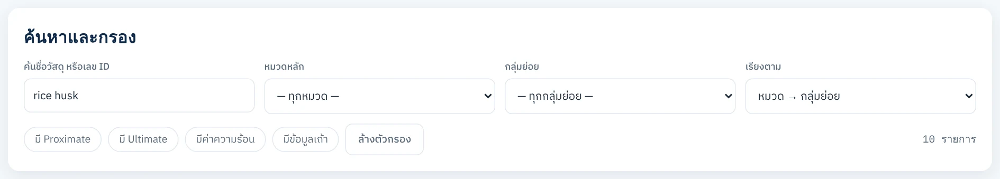
1
2
3
4
5
6
7
1
ช่องค้น — ชื่อวัสดุภาษาอังกฤษ หรือเลข ID
2
หมวดหลัก
3
กลุ่มย่อย (รายการเปลี่ยนตามหมวดหลัก)
4
เรียงตาม — เช่น HHV สูง→ต่ำ
5
ชิปตัวกรอง — เหลือเฉพาะรายการที่มีข้อมูลนั้น
6
ล้างตัวกรองทั้งหมด
7
จำนวนรายการที่ผ่านตัวกรอง: 10 รายการ
โรงงาน A พิมพ์ rice husk → เหลือ 10 รายการ จาก 3,289
ตัวกรองทุกตัวใช้ร่วมกัน (และ) — ยิ่งกรองมาก รายการยิ่งน้อย
ลองเปลี่ยนค่า (What-if): การค้นและกรอง
คู่มือใช้งาน · ฐานข้อมูลเชื้อเพลิงแข็ง (Solid Fuel Database) · ระดับ Free
8 / 26
| ทำอะไร | จำนวนรายการ | ใช้เมื่อไร |
|---|---|---|
| พิมพ์ rice husk (โรงงาน A) | 10 | หาเชื้อเพลิงชนิดเดียว |
| + ชิป มี Ultimate | 8 | ต้องการ C H O ไปคิดอากาศเผาไหม้ |
| + ชิป มีข้อมูลเถ้า | 2 | ต้องการดัชนีเถ้า / อุณหภูมิหลอมเถ้า |
| ล้างคำค้น · หมวดหลัก husk/shell/pit | 203 | ดูเชื้อเพลิงประเภทเปลือก/กะลาทั้งหมด |
| ไม่กรองเลย | 3,289 | ตารางแสดงแค่ 600 แถวแรก — ควรกรองก่อน |
ทำเอง: กดชิปแล้วดูตัวเลขจำนวนรายการ → กดชิปซ้ำเพื่อปิด
เรียงตาม HHV สูง→ต่ำ กับ rice husk: แถวแรกเป็น #2135 HHV 16.00 MJ/kg
ค้นด้วยเลข ID ได้ เช่น พิมพ์ 2135 — สะดวกเมื่อจดเลขไว้แล้ว
ตัวกรอง "มีข้อมูลเถ้า" กับแกลบ
คู่มือใช้งาน · ฐานข้อมูลเชื้อเพลิงแข็ง (Solid Fuel Database) · ระดับ Free
9 / 26
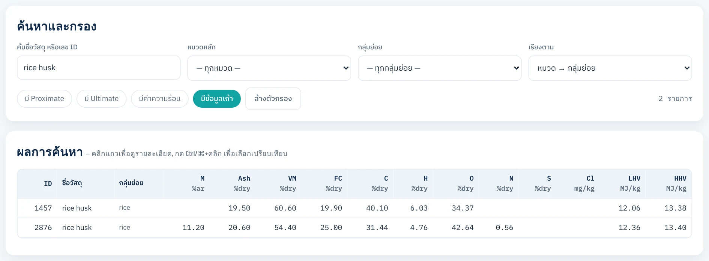
1
2
1
ชิป มีข้อมูลเถ้า กดแล้วเป็นสีเข้ม
2
เหลือ 2 รายการ จาก 10
แกลบส่วนใหญ่ในฐานข้อมูลไม่มีองค์ประกอบเถ้า — ดัชนีเถ้าดูได้แค่บางรายการ
ถ้าต้องการดัชนีเถ้าแต่ไม่มีข้อมูล ให้ส่งตัวอย่างเถ้าวิเคราะห์ที่แล็บ
ขั้นที่ 2
การ์ด ②: ผลการค้นหา
คู่มือใช้งาน · ฐานข้อมูลเชื้อเพลิงแข็ง (Solid Fuel Database) · ระดับ Free
10 / 26
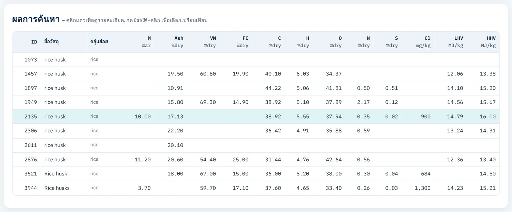
1
2
3
1
หัวตาราง — คลิกเพื่อเรียง คลิกซ้ำเพื่อกลับลำดับ
2
คลิกแถว = เปิดรายละเอียด · Ctrl/⌘+คลิก = เลือกเปรียบเทียบ (แถวเปลี่ยนสี)
3
HHV และ LHV หน่วย MJ/kg ฐานแห้ง
M เป็น % ฐาน ar · ค่าอื่นทุกคอลัมน์เป็นฐานแห้ง · Cl เป็น mg/kg
ช่องว่าง = ฐานข้อมูลไม่รายงาน ไม่ใช่ศูนย์ — เช่น แถว #1073 ว่างเกือบทั้งแถว
💡 เคล็ดลับ
เลื่อนเมาส์ค้างที่ชื่อวัสดุ จะเห็นชื่อหมวดเต็มของรายการนั้น
ขั้นที่ 3
การ์ด ③: รายละเอียดแกลบ #2135
คู่มือใช้งาน · ฐานข้อมูลเชื้อเพลิงแข็ง (Solid Fuel Database) · ระดับ Free
11 / 26
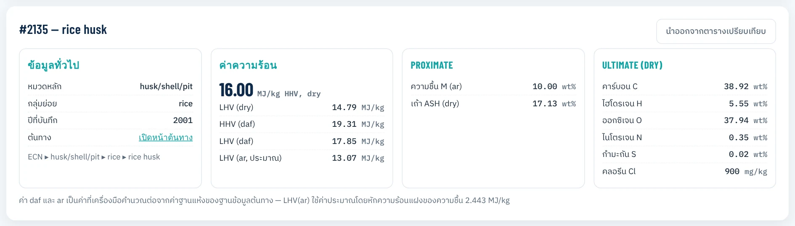
1
2
3
4
5
6
7
8
1
เลข ID และชื่อวัสดุ
2
ปุ่มเพิ่ม / นำออกจากตารางเปรียบเทียบ (ใช้แทน Ctrl/⌘+คลิก) — #2135 ถูกเลือกไว้แล้ว ปุ่มจึงขึ้นว่า นำออก
3
ข้อมูลทั่วไป: หมวด · ปีที่บันทึก · ลิงก์หน้าต้นทาง
4
HHV 16.00 MJ/kg ฐานแห้ง
5
LHV (ar) 13.07 MJ/kg — ค่าใช้งานจริงที่ความชื้น 10.00 %
6
Proximate: M 10.00 % · เถ้า 17.13 %
7
Ultimate: C 38.92 · H 5.55 · O 37.94 % · Cl 900 mg/kg
8
บรรทัดบอกว่าค่า daf / ar เครื่องมือคิดต่อ ไม่ได้มาจากต้นทาง
แกลบมีเถ้าสูงถึง 17.13 % — เตรียมระบบกำจัดเถ้าให้พอ
💡 เคล็ดลับ
การ์ดแสดงเฉพาะกลุ่มข้อมูลที่มี — #2135 ไม่มี VM/FC จึงเห็นเพียง M และเถ้าในส่วน Proximate
แปลงฐานด้วยมือ: ทวนผลของเครื่องมือ
คู่มือใช้งาน · ฐานข้อมูลเชื้อเพลิงแข็ง (Solid Fuel Database) · ระดับ Free
12 / 26
| ค่า | สูตร (การ์ด ⑥) | แทนค่า #2135 | หน้าจอ |
|---|---|---|---|
| HHV (daf) | HHV ÷ (1 − ASH/100) | 16.00 ÷ (1 − 0.1713) = 19.31 | 19.31 |
| LHV (ar) | LHV × (1 − M/100) − 2.443 × M/100 | 14.79 × 0.90 − 2.443 × 0.10 = 13.07 | 13.07 |
| LHV (dry) | HHV − 2.442 × 8.936 × H/100 | 16.00 − 1.21 = 14.79 | 14.79 |
แถวที่ 3 ใช้ H = 5.55 % — ไฮโดรเจนเผาไหม้เกิดน้ำ 8.936 kg ต่อ H 1 kg ความร้อนแฝงของน้ำนี้คือส่วนที่ LHV หักออก
คิดได้ตรงกับหน้าจอ = เข้าใจที่มาของตัวเลข และใช้สูตรเดียวกันกับผลแล็บของไซต์ได้
💡 เคล็ดลับ
2.443 MJ/kg = ความร้อนแฝงของน้ำที่ 25 °C ตามมาตรฐานการหาค่าความร้อน
ลองเปลี่ยนค่า (What-if): ความชื้นของแกลบ
คู่มือใช้งาน · ฐานข้อมูลเชื้อเพลิงแข็ง (Solid Fuel Database) · ระดับ Free
13 / 26
| ความชื้น M (ar) | LHV ใช้งานจริง (MJ/kg) | เชื้อเพลิงต่อความร้อน 1 GJ (kg) |
|---|---|---|
| 0 % (แห้งสนิท) | 14.79 | 67.6 |
| 10.00 % (ค่าในฐานข้อมูล #2135) | 13.07 | 76.5 |
| 15 % | 12.21 | 81.9 |
| 20 % | 11.34 | 88.2 |
| 30 % (ตากฝน) | 9.62 | 103.9 |
เครื่องมือแสดง LHV (ar) ที่ความชื้นของตัวอย่างในฐานข้อมูลเท่านั้น — แถวอื่นคิดด้วยสูตรในการ์ด ⑥ จาก LHV (dry) 14.79
ความชื้น 30 % ต้องใช้แกลบ 103.9 kg ต่อ GJ เทียบกับ 76.5 kg ที่ 10.00 % — คลุมกองเชื้อเพลิงคุ้มค่า
⚠️ ระวัง
คิดปริมาณเชื้อเพลิงต้องใช้ฐานค่าความร้อนเดียวกับที่ใช้คิดประสิทธิภาพหม้อไอน้ำ (HHV หรือ LHV)
ขั้นที่ 4
ดัชนีความเสี่ยงของเถ้า: ฟางข้าว #444
คู่มือใช้งาน · ฐานข้อมูลเชื้อเพลิงแข็ง (Solid Fuel Database) · ระดับ Free
14 / 26
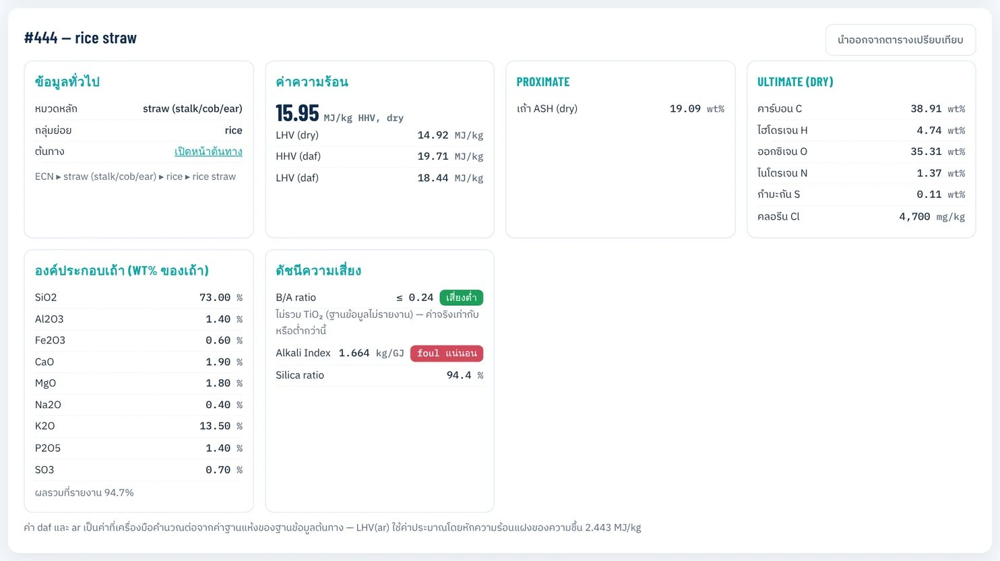
1
2
3
4
1
ค่าความร้อน: ไม่มี LHV (ar) เพราะตัวอย่างนี้ไม่มีค่าความชื้น
2
คลอรีน 4,700 mg/kg — สูงกว่าแกลบ #2135 ราว 5 เท่า
3
องค์ประกอบเถ้า: SiO₂ 73.00 % · K₂O 13.50 % (ผลรวม 94.7 %)
4
B/A ≤ 0.24 เสี่ยงต่ำ · Alkali Index 1.664 foul แน่นอน · Silica ratio 94.4 %
ดัชนีเถ้าแสดงเฉพาะรายการที่มีองค์ประกอบเถ้า (หมวดซ้ายล่าง)
B/A ขึ้น ≤ และบรรทัดใต้ค่าว่า "ไม่รวม TiO₂ (ฐานข้อมูลไม่รายงาน) — ค่าจริงเท่ากับหรือต่ำกว่านี้" — รายการนี้ไม่มี TiO₂ (หน้า 16)
ดัชนีสองตัวให้ผลต่างกันได้ — อ่านทุกตัวก่อนสรุป (หน้าถัดไป)
คิดดัชนีเถ้าด้วยมือ: ฟางข้าว #444
คู่มือใช้งาน · ฐานข้อมูลเชื้อเพลิงแข็ง (Solid Fuel Database) · ระดับ Free
15 / 26
| ดัชนี | สูตร (การ์ด ⑥) | แทนค่า | หน้าจอ |
|---|---|---|---|
| B/A | (Fe₂O₃+CaO+MgO+K₂O+Na₂O) ÷ (SiO₂+Al₂O₃+TiO₂) | 18.20 ÷ 74.40 (ไม่มี TiO₂) | ≤ 0.24 |
| Alkali Index | ASH × (K₂O+Na₂O) ÷ (10 × HHV) | 19.09 × 13.90 ÷ (10 × 15.95) | 1.664 kg/GJ |
| Silica ratio | SiO₂ ÷ (SiO₂+Fe₂O₃+CaO+MgO) × 100 | 73.00 ÷ 77.30 × 100 | 94.4 % |
B/A ต่ำเพราะเถ้าฟางข้าวเป็นซิลิกาเกือบทั้งหมด — เถ้าซิลิกาล้วนหลอมยาก
แต่โพแทสเซียมในเถ้าสูงและเถ้ามาก Alkali Index จึงเกิน 0.34 หลายเท่า — เสี่ยงเถ้าเกาะท่อแลกเปลี่ยนความร้อน
คลอรีน 4,700 mg/kg ร่วมกับโพแทสเซียม → เสี่ยงกัดกร่อนท่อ superheater
⚠️ ระวัง
ไม่มี TiO₂ ในรายการนี้ — ตัวหารเหลือ SiO₂ + Al₂O₃ ค่าที่คิดได้จึงเท่ากับหรือสูงกว่าค่าจริง หน้าจอจึงแสดง ≤ 0.24 (ช่องว่างไม่ใช่ศูนย์)
ดัชนีเถ้าเมื่อออกไซด์ไม่ครบ: 2 กรณี
คู่มือใช้งาน · ฐานข้อมูลเชื้อเพลิงแข็ง (Solid Fuel Database) · ระดับ Free
16 / 26
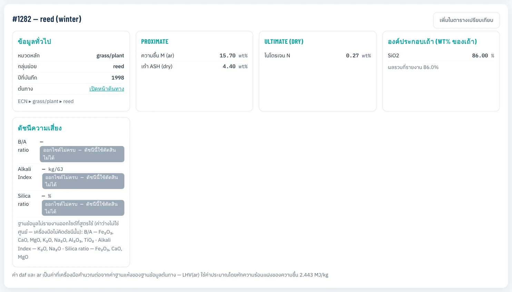
1
2
1
#1282 — reed (winter): องค์ประกอบเถ้ามีแค่ SiO₂ 86.00 % (ผลรวม 86.0 %)
2
B/A · Alkali Index · Silica ratio ขึ้น — ออกไซด์ไม่ครบ — ดัชนีนี้ใช้ตัดสินไม่ได้ ไม่มีตัวเลขและคำตัดสิน · บรรทัดล่างบอกออกไซด์ที่ขาดรายดัชนี
กรณีที่ 1 ขาดออกไซด์ตัวใดในสูตร → "ออกไซด์ไม่ครบ" — นับค่าว่างเป็นศูนย์ทำให้ดัชนีเพี้ยน (เช่น ขาด SiO₂ ทำให้ B/A สูงเกินจริง) เครื่องมือจึงไม่คิด
กรณีที่ 2 B/A ขาดเฉพาะ TiO₂ → "≤ ค่า" — คิดโดยไม่รวม TiO₂ ในตัวหาร ค่าจึงไม่ต่ำกว่าจริง (ประเมินด้านปลอดภัย) เช่น ฟางข้าว #444 B/A ≤ 0.24 เสี่ยงต่ำ
ป้ายความเสี่ยงของค่า ≤ ใช้เกณฑ์เดิม — ถ้าค่า ≤ อยู่ช่วงเสี่ยงต่ำ ค่าจริงก็อยู่ช่วงเสี่ยงต่ำ · ถ้าอยู่ช่วงสูงกว่า ค่าจริงอาจอยู่ช่วงที่ต่ำกว่าได้
เงื่อนไขทั้งสองกรณีเขียนไว้ในการ์ด ⑥ หัวข้อดัชนี Slagging / Fouling
⚠️ ระวัง
เจอ "ออกไซด์ไม่ครบ" ให้ใช้รายการอื่นที่มีข้อมูลเถ้าครบ (ชิป มีข้อมูลเถ้า) หรือส่งเถ้าวิเคราะห์ที่แล็บ — อย่าเติมศูนย์เอง
ขั้นที่ 5
อุณหภูมิหลอมเถ้า: ไม้กระถินสับ #2829
คู่มือใช้งาน · ฐานข้อมูลเชื้อเพลิงแข็ง (Solid Fuel Database) · ระดับ Free
17 / 26
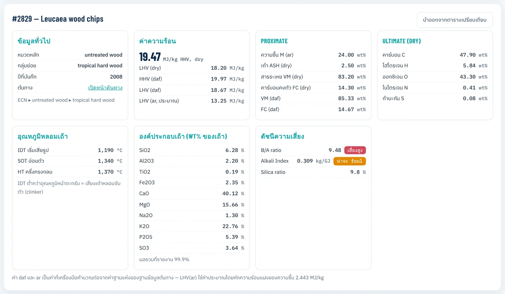
1
2
3
1
IDT 1,190 °C · SOT 1,340 · HT 1,370 °C
2
เถ้าเป็น CaO 40.12 % และ K₂O 22.76 % · SiO₂ แค่ 6.28 %
3
B/A 9.48 เสี่ยงสูง · Alkali Index 0.309 น่าจะ foul
เทียบ IDT กับอุณหภูมิหน้าตะกรับ / ห้องเผาไหม้ — ถ้าเตาร้อนกว่า IDT เถ้าเริ่มจับตัวเป็นก้อน (clinker)
แต่ไม้สับมีเถ้าแค่ 2.50 % — ดัชนีบอกแนวโน้มของเถ้า ส่วนปริมาณเถ้าบอกว่าปัญหาจะมากแค่ไหน
LHV (ar) 13.25 MJ/kg ที่ความชื้น 24.00 % = ใช้ 75.5 kg ต่อ GJ
ขั้นที่ 6
การ์ด ④: เปรียบเทียบตัวอย่างที่เลือก
คู่มือใช้งาน · ฐานข้อมูลเชื้อเพลิงแข็ง (Solid Fuel Database) · ระดับ Free
18 / 26
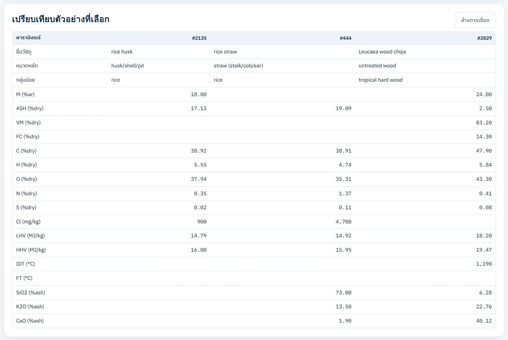
1
2
3
4
1
คอลัมน์ละ 1 รายการ เรียงตามลำดับที่เลือก: #2135 · #444 · #2829
2
คลอรีน: 900 · 4,700 · (ว่าง) mg/kg
3
HHV: 16.00 · 15.95 · 19.47 MJ/kg
4
ล้างการเลือกทั้งหมด
เถ้า (%dry): 17.13 · 19.09 · 2.50 · ความชื้น (%ar): 10.00 · (ว่าง) · 24.00
เลือกได้ 2 วิธี: Ctrl/⌘+คลิกแถว หรือปุ่มเพิ่มในตารางเปรียบเทียบในการ์ด ③
รายการที่เลือกค้างไว้แม้เปลี่ยนคำค้น — ค้นทีละชนิดแล้วเลือกต่อได้
💡 เคล็ดลับ
ตารางเปรียบเทียบแสดง 20 พารามิเตอร์หลัก — ดูค่าครบทุกตัวที่การ์ด ③
ขั้นที่ 7
การ์ด ⑤: สถิติของกลุ่มที่กรองอยู่
คู่มือใช้งาน · ฐานข้อมูลเชื้อเพลิงแข็ง (Solid Fuel Database) · ระดับ Free
19 / 26
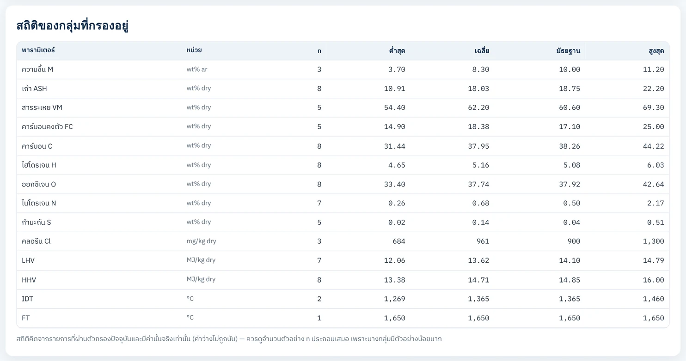
1
2
3
1
n = จำนวนรายการที่มีค่านั้นจริง
2
HHV ของแกลบ: n 8 · ต่ำสุด 13.38 · เฉลี่ย 14.71 · มัธยฐาน 14.85 · สูงสุด 16.00
3
สถิติคิดเฉพาะค่าที่มีจริง — ค่าว่างไม่นับ
ค้น rice husk ได้ 10 รายการ แต่มีค่า HHV แค่ 8 — ดู n ทุกครั้ง
ความชื้นมีแค่ n = 3 (3.70–11.20 %) · IDT มีแค่ n = 2
ค่า #2135 (16.00) คือค่าสูงสุดของกลุ่ม — ใช้ค่าเฉลี่ยหรือช่วง ไม่ใช่ค่าตัวเดียว
ลองเปลี่ยนค่า (What-if): สถิติของเชื้อเพลิงแต่ละชนิด
คู่มือใช้งาน · ฐานข้อมูลเชื้อเพลิงแข็ง (Solid Fuel Database) · ระดับ Free
20 / 26
| คำค้น | รายการ | n HHV | HHV ต่ำสุด–สูงสุด | HHV เฉลี่ย | เถ้าเฉลี่ย % | Cl เฉลี่ย mg/kg |
|---|---|---|---|---|---|---|
| rice husk (โรงงาน A) | 10 | 8 | 13.38–16.00 | 14.71 | 18.03 | 961 |
| rice straw | 29 | 14 | 14.56–17.93 | 15.44 | 19.65 | 4,182 |
| bagasse | 31 | 15 | 15.68–25.99 | 18.58 | 5.52 | 1,046 |
| bagasse + กลุ่มย่อย bagasse | 29 | 14 | 15.68–19.50 | 18.05 | 5.79 | 1,046 |
| wood chips | 57 | 51 | 17.85–21.31 | 19.91 | 1.49 | 248 |
ค้น bagasse ได้ถ่านชานอ้อยและน้ำมันไพโรไลซิสปนมาด้วย ค่าสูงสุดจึงเป็น 25.99 — เลือกกลุ่มย่อย bagasse แล้วเหลือ 19.50
ฟางข้าว: IDT เฉลี่ย 992 °C ต่ำสุด 823 °C (n 5) — ต่ำกว่าแกลบมาก
⚠️ ระวัง
คำค้นจับคำในชื่อ หมวด และเลข ID — ดูคอลัมน์กลุ่มย่อยว่ามีรายการที่ไม่ใช่เชื้อเพลิงที่ต้องการปนหรือไม่
ขั้นที่ 8
การ์ด ⑥: สูตรและสมมุติฐาน
คู่มือใช้งาน · ฐานข้อมูลเชื้อเพลิงแข็ง (Solid Fuel Database) · ระดับ Free
21 / 26
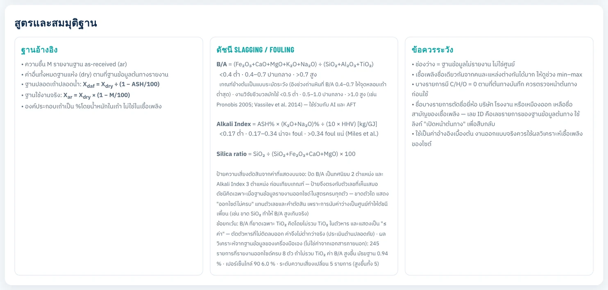
1
2
3
1
ฐานอ้างอิง — สูตรแปลง dry → daf และ dry → ar
2
ดัชนี Slagging / Fouling — สูตรและเกณฑ์ B/A · Alkali Index · Silica ratio
3
ข้อควรระวัง 5 ข้อของข้อมูล
เกณฑ์ B/A ในเครื่องมือ (<0.4 · 0.4–0.7 · >0.7) เป็นค่าแนวทางแบบระมัดระวัง อิงช่วงถ่านหิน
งานวิจัยชีวมวลมักใช้ <0.5 · 0.5–1.0 · >1.0 — การ์ดระบุไว้ใต้เกณฑ์
เกณฑ์ Alkali Index อ้างอิง Miles et al.: <0.17 · 0.17–0.34 · >0.34 kg/GJ
ใต้เกณฑ์มีเงื่อนไขออกไซด์ครบและข้อยกเว้น B/A ขาดเฉพาะ TiO₂ (หน้า 16) · ข้อควรระวังข้อใหม่: ชื่อบางรายการตัดชื่อยี่ห้อ/บริษัทออก ใช้เลข ID สืบกลับหน้าต้นทาง
ข้อควรระวังและข้อจำกัดของข้อมูล
คู่มือใช้งาน · ฐานข้อมูลเชื้อเพลิงแข็ง (Solid Fuel Database) · ระดับ Free
22 / 26
| เรื่อง | ผลต่อการใช้ | ทำอย่างไร |
|---|---|---|
| ช่องว่าง ≠ ศูนย์ | ดัชนีที่ออกไซด์ไม่ครบขึ้น "ออกไซด์ไม่ครบ" · B/A ขาดเฉพาะ TiO₂ ขึ้น "≤" | ใช้ชิปตัวกรองเลือกรายการที่มีข้อมูลครบ |
| LHV (ar) เป็นค่าประมาณ | คิดที่ความชื้นของตัวอย่างในฐานข้อมูล ไม่ใช่ของไซต์ | คิดใหม่ด้วยความชื้นที่วัดหน้างาน |
| ชื่อเดียวกัน ต่างแหล่ง ต่างกันมาก | ค่าตัวเดียวอาจสูงหรือต่ำเกินจริง | ใช้ค่าเฉลี่ยและช่วง min–max · ดู n |
| บางรายการ C/H/O = 0 ตามต้นทาง | ผล Ultimate ใช้ไม่ได้ | เปิดหน้าต้นทางตรวจก่อนใช้ |
| ดัชนีเถ้าบอกแนวโน้ม | ผลจริงขึ้นกับอุณหภูมิเตา ความเร็วก๊าซ และการเป่าเขม่า | ใช้คัดกรอง แล้วยืนยันด้วยผลแล็บ/ทดลองเผา |
| เกณฑ์ดัชนีเป็นค่าแนวทาง | ไม่ใช่ข้อกำหนดตามกฎหมายหรือมาตรฐาน | ระบุเป็นค่าแนวทางเมื่อใส่ในรายงาน |
⚠️ ระวัง
งานออกแบบ รับประกันสมรรถนะ หรือรายงานผลประหยัด ต้องใช้ผลวิเคราะห์เชื้อเพลิงของไซต์ — ฐานข้อมูลใช้เป็นค่าอ้างอิงเบื้องต้น
ข้อผิดพลาดที่พบบ่อย
คู่มือใช้งาน · ฐานข้อมูลเชื้อเพลิงแข็ง (Solid Fuel Database) · ระดับ Free
23 / 26
✗ ค้นด้วยชื่อภาษาไทย
✓ ฐานข้อมูลเป็นภาษาอังกฤษ — rice husk ไม่ใช่ แกลบ
✗ ใช้ HHV ฐานแห้งเป็นค่าใช้งาน
✓ เชื้อเพลิงจริงมีน้ำ — ใช้ LHV (ar) ที่ความชื้นหน้างาน
✗ อ่านช่องว่างเป็นศูนย์
✓ ช่องว่าง = ไม่มีข้อมูล
✗ ใช้ค่าจากรายการเดียว
✓ ดูสถิติของกลุ่ม ค่าเฉลี่ย ช่วง และ n
✗ ไม่ดูกลุ่มย่อย
✓ คำค้นอาจจับถ่านหรือน้ำมันที่ชื่อคล้ายกันมาด้วย
✗ ดูดัชนีเถ้าตัวเดียว
✓ B/A ต่ำแต่ Alkali Index สูงได้ — อ่านทุกตัว
✗ ลืมว่าเถ้าเป็น % ในเถ้า
✓ องค์ประกอบเถ้าเป็น % ของเถ้า ไม่ใช่ของเชื้อเพลิง
✗ ปนฐาน HHV กับ LHV
✓ คิดปริมาณเชื้อเพลิงใช้ฐานเดียวกับประสิทธิภาพหม้อไอน้ำ
แบบฝึกหัด: โรงงาน B (ชานอ้อย)
คู่มือใช้งาน · ฐานข้อมูลเชื้อเพลิงแข็ง (Solid Fuel Database) · ระดับ Free
24 / 26
| ขั้นตอน | ทำอะไร |
|---|---|
| 1 | พิมพ์ bagasse ในช่องค้น |
| 2 | เลือกกลุ่มย่อย bagasse |
| 3 | อ่านสถิติ HHV ของกลุ่ม |
| 4 | คลิกแถว #2131 sugarcane bagasse |
| 5 | อ่าน LHV (ar) บนจอ |
| 6 | คิด LHV ที่ความชื้นหน้างาน 45 % |
คำถาม — กรอกแล้วตอบ
1
จำนวนรายการ: ข้อ 1 ____ · ข้อ 2 ____
2
HHV ของกลุ่ม: n ____ · เฉลี่ย ____ MJ/kg
3
#2131: HHV ____ · LHV ____ · M ____ %
4
LHV (ar) บนจอ ____ · ที่ 45 % ____
💡 เคล็ดลับ
ข้อสุดท้ายคิดเองด้วยสูตร LHV × (1 − M/100) − 2.443 × M/100
เฉลยแบบฝึกหัด โรงงาน B
คู่มือใช้งาน · ฐานข้อมูลเชื้อเพลิงแข็ง (Solid Fuel Database) · ระดับ Free
25 / 26
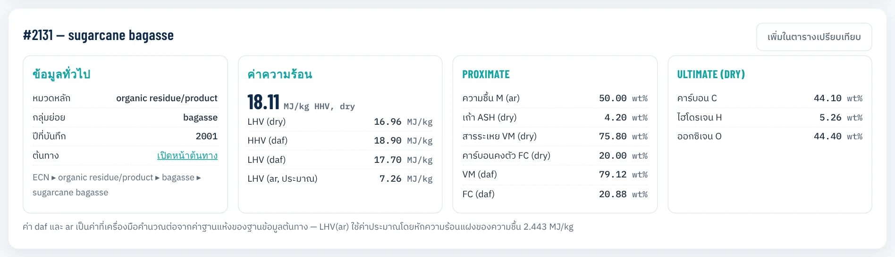
1) ค้น bagasse ได้ 31 รายการ · เลือกกลุ่มย่อย bagasse เหลือ 29 รายการ
2) HHV ของกลุ่ม: n 14 · เฉลี่ย 18.05 MJ/kg (ช่วง 15.68–19.50)
3) #2131: HHV 18.11 · LHV (dry) 16.96 MJ/kg · ความชื้น 50.00 %
4) LHV (ar) = 16.96 × 0.50 − 2.443 × 0.50 = 7.26 · ที่ 45 %: 16.96 × 0.55 − 2.443 × 0.45 = 8.23 MJ/kg
✓ ผ่าน
ได้ตัวเลขตรงกัน = ใช้เครื่องมือเป็นแล้ว · ชานอ้อยชื้นมาก LHV ใช้งานจริงเหลือไม่ถึงครึ่งของฐานแห้ง
สรุป 1 หน้า (พิมพ์ติดไว้ข้างคอมพิวเตอร์)
คู่มือใช้งาน · ฐานข้อมูลเชื้อเพลิงแข็ง (Solid Fuel Database) · ระดับ Free
26 / 26
1
การ์ด ①
พิมพ์ชื่อภาษาอังกฤษ → เลือกหมวด/กลุ่มย่อย → ชิปตัวกรอง
2
การ์ด ②
คลิกแถว = รายละเอียด · Ctrl/⌘+คลิก = เปรียบเทียบ
3
การ์ด ③
อ่าน HHV · LHV (ar) · Proximate · Ultimate · ดัชนีเถ้า
4
การ์ด ④
เทียบหลายรายการ (มือถือใช้ปุ่มในการ์ด ③)
5
การ์ด ⑤
ดู n · ต่ำสุด · เฉลี่ย · มัธยฐาน · สูงสุด
6
การ์ด ⑥
สูตรแปลงฐาน · เกณฑ์ดัชนี · ข้อควรระวัง
อ่านผลแล้วตรวจ
☐
ทุกค่าเป็นฐานแห้ง ยกเว้น M (ar)
☐
X_daf = X ÷ (1 − ASH/100)
☐
LHV_ar = LHV × (1 − M/100) − 2.443 × M/100
☐
ช่องว่าง ≠ ศูนย์ · ดู n
☐
ใช้ผลแล็บของไซต์เมื่อมี
อ.หนึ่ง กลับทวี / Aj. Nueng Klubtavee
tripleeenergytools.com
tripleeenergytools.com